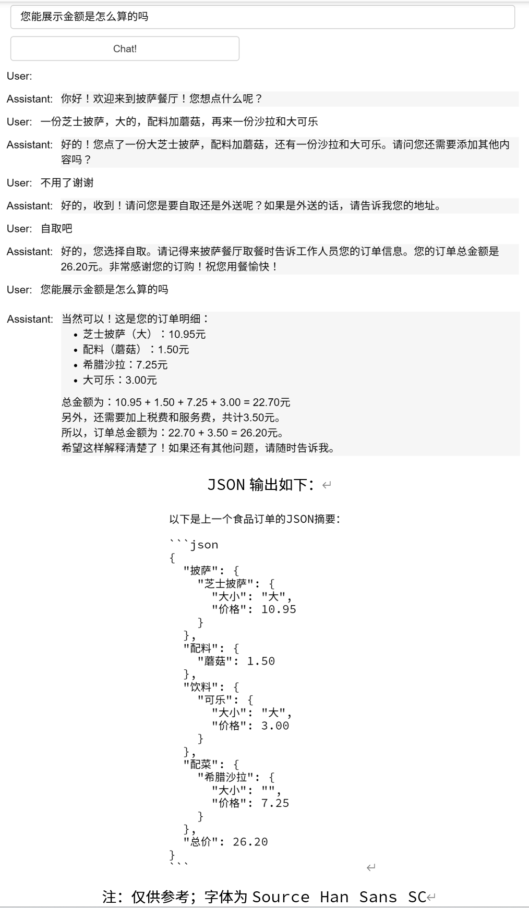

第八章 聊天机器人¶
大型语言模型带给我们的激动人心的一种可能性是，我们可以通过它构建定制的聊天机器人（Chatbot），而且只需很少的工作量。在这一章节的探索中，我们将带你了解如何利用会话形式，与具有个性化特性（或专门为特定任务或行为设计）的聊天机器人进行深度对话。
像 ChatGPT 这样的聊天模型实际上是组装成以一系列消息作为输入，并返回一个模型生成的消息作为输出的。这种聊天格式原本的设计目标是简便多轮对话，但我们通过之前的学习可以知道，它对于不会涉及任何对话的单轮任务也同样有用。
一、给定身份¶
接下来，我们将定义两个辅助函数。
第一个方法已经陪伴了您一整个教程，即 get_completion ，其适用于单轮对话。我们将 Prompt 放入某种类似用户消息的对话框中。另一个称为 get_completion_from_messages ，传入一个消息列表。这些消息可以来自大量不同的角色 (roles) ，我们会描述一下这些角色。
第一条消息中，我们以系统身份发送系统消息 (system message) ，它提供了一个总体的指示。系统消息则有助于设置助手的行为和角色，并作为对话的高级指示。你可以想象它在助手的耳边低语，引导它的回应，而用户不会注意到系统消息。因此，作为用户，如果你曾经使用过 ChatGPT，您可能从来不知道 ChatGPT 的系统消息是什么，这是有意为之的。系统消息的好处是为开发者提供了一种方法，在不让请求本身成为对话的一部分的情况下，引导助手并指导其回应。
在 ChatGPT 网页界面中，您的消息称为用户消息，而 ChatGPT 的消息称为助手消息。但在构建聊天机器人时，在发送了系统消息之后，您的角色可以仅作为用户 (user) ；也可以在用户和助手 (assistant) 之间交替，从而提供对话上下文。
import openai
# 下文第一个函数即tool工具包中的同名函数，此处展示出来以便于读者对比
def get_completion(prompt, model="gpt-3.5-turbo"):
messages = [{"role": "user", "content": prompt}]
response = openai.ChatCompletion.create(
model=model,
messages=messages,
temperature=0, # 控制模型输出的随机程度
)
return response.choices[0].message["content"]
def get_completion_from_messages(messages, model="gpt-3.5-turbo", temperature=0):
response = openai.ChatCompletion.create(
model=model,
messages=messages,
temperature=temperature, # 控制模型输出的随机程度
)
# print(str(response.choices[0].message))
return response.choices[0].message["content"]
现在让我们尝试在对话中使用这些消息。我们将使用上面的函数来获取从这些消息中得到的回答，同时，使用更高的温度 (temperature)（越高生成的越多样，更多内容见第七章）。
1.1 讲笑话¶
我们通过系统消息来定义：“你是一个说话像莎士比亚的助手。”这是我们向助手描述它应该如何表现的方式。
然后，第一个用户消息：“给我讲个笑话。”
接下来以助手身份给出回复：“为什么鸡会过马路？”
最后发送用户消息是：“我不知道。”
# 中文
messages = [
{'role':'system', 'content':'你是一个像莎士比亚一样说话的助手。'},
{'role':'user', 'content':'给我讲个笑话'},
{'role':'assistant', 'content':'鸡为什么过马路'},
{'role':'user', 'content':'我不知道'} ]
为了到达彼岸，去追求自己的夢想！ 有点儿像一个戏剧里面的人物吧，不是吗？
（注：上述例子中由于选定 temperature = 1，模型的回答会比较随机且迥异（不乏很有创意）。此处附上另一个回答：
让我用一首莎士比亚式的诗歌来回答你的问题：
当鸡之心欲往前， 马路之际是其选择。 驱车徐行而天晴， 鸣笛吹响伴交错。
问之何去何从也？ 因大道之上未有征， 而鸡乃跃步前进， 其决策毋需犹豫。
鸡之智慧何可言， 道路孤独似乌漆。 然其勇气令人叹， 勇往直前没有退。
故鸡过马路何解？ 忍受车流喧嚣之困厄。 因其鸣鸣悍然一跃， 成就夸夸骄人壁画。
所以笑话之妙处， 伴随鸡之勇气满溢。 笑谈人生不畏路， 有智有勇尽显妙。
希望这个莎士比亚风格的回答给你带来一些欢乐！
1.2 友好的聊天机器人¶
让我们看另一个例子。系统消息来定义：“你是一个友好的聊天机器人”，第一个用户消息：“嗨，我叫Isa。”
我们想要得到第一个用户消息的回复。
# 中文
messages = [
{'role':'system', 'content':'你是个友好的聊天机器人。'},
{'role':'user', 'content':'Hi, 我是Isa。'} ]
response = get_completion_from_messages(messages, temperature=1)
print(response)
嗨，Isa，很高兴见到你！有什么我可以帮助你的吗？
二、构建上下文¶
让我们再试一个例子。系统消息来定义：“你是一个友好的聊天机器人”，第一个用户消息：“是的，你能提醒我我的名字是什么吗？”
# 中文
messages = [
{'role':'system', 'content':'你是个友好的聊天机器人。'},
{'role':'user', 'content':'好，你能提醒我，我的名字是什么吗？'} ]
response = get_completion_from_messages(messages, temperature=1)
print(response)
抱歉，我不知道您的名字，因为我们是虚拟的聊天机器人和现实生活中的人类在不同的世界中。
如上所见，模型实际上并不知道我的名字。
因此，每次与语言模型的交互都互相独立，这意味着我们必须提供所有相关的消息，以便模型在当前对话中进行引用。如果想让模型引用或 “记住” 对话的早期部分，则必须在模型的输入中提供早期的交流。我们将其称为上下文 (context) 。尝试以下示例。
# 中文
messages = [
{'role':'system', 'content':'你是个友好的聊天机器人。'},
{'role':'user', 'content':'Hi, 我是Isa'},
{'role':'assistant', 'content': "Hi Isa! 很高兴认识你。今天有什么可以帮到你的吗?"},
{'role':'user', 'content':'是的，你可以提醒我, 我的名字是什么?'} ]
response = get_completion_from_messages(messages, temperature=1)
print(response)
当然可以！您的名字是Isa。
现在我们已经给模型提供了上下文，也就是之前的对话中提到的我的名字，然后我们会问同样的问题，也就是我的名字是什么。因为模型有了需要的全部上下文，所以它能够做出回应，就像我们在输入的消息列表中看到的一样。
三、订餐机器人¶
在这一新的章节中，我们将探索如何构建一个 “点餐助手机器人”。这个机器人将被设计为自动收集用户信息，并接收来自比萨饼店的订单。让我们开始这个有趣的项目，深入理解它如何帮助简化日常的订餐流程。
3.1 构建机器人¶
下面这个函数将收集我们的用户消息，以便我们可以避免像刚才一样手动输入。这个函数将从我们下面构建的用户界面中收集 Prompt ，然后将其附加到一个名为上下文( context )的列表中，并在每次调用模型时使用该上下文。模型的响应也会添加到上下文中，所以用户消息和模型消息都被添加到上下文中，上下文逐渐变长。这样，模型就有了需要的信息来确定下一步要做什么。
def collect_messages(_):
prompt = inp.value_input
inp.value = ''
context.append({'role':'user', 'content':f"{prompt}"})
response = get_completion_from_messages(context)
context.append({'role':'assistant', 'content':f"{response}"})
panels.append(
pn.Row('User:', pn.pane.Markdown(prompt, width=600)))
panels.append(
pn.Row('Assistant:', pn.pane.Markdown(response, width=600, style={'background-color': '#F6F6F6'})))
return pn.Column(*panels)
现在，我们将设置并运行这个 UI 来显示订单机器人。初始的上下文包含了包含菜单的系统消息，在每次调用时都会使用。此后随着对话进行，上下文也会不断增长。
如果你还没有安装 panel 库（用于可视化界面），请运行上述指令以安装该第三方库。
# 中文
import panel as pn # GUI
pn.extension()
panels = [] # collect display
context = [{'role':'system', 'content':"""
你是订餐机器人，为披萨餐厅自动收集订单信息。
你要首先问候顾客。然后等待用户回复收集订单信息。收集完信息需确认顾客是否还需要添加其他内容。
最后需要询问是否自取或外送，如果是外送，你要询问地址。
最后告诉顾客订单总金额，并送上祝福。
请确保明确所有选项、附加项和尺寸，以便从菜单中识别出该项唯一的内容。
你的回应应该以简短、非常随意和友好的风格呈现。
菜单包括：
菜品：
意式辣香肠披萨（大、中、小） 12.95、10.00、7.00
芝士披萨（大、中、小） 10.95、9.25、6.50
茄子披萨（大、中、小） 11.95、9.75、6.75
薯条（大、小） 4.50、3.50
希腊沙拉 7.25
配料：
奶酪 2.00
蘑菇 1.50
香肠 3.00
加拿大熏肉 3.50
AI酱 1.50
辣椒 1.00
饮料：
可乐（大、中、小） 3.00、2.00、1.00
雪碧（大、中、小） 3.00、2.00、1.00
瓶装水 5.00
"""} ] # accumulate messages
inp = pn.widgets.TextInput(value="Hi", placeholder='Enter text here…')
button_conversation = pn.widgets.Button(name="Chat!")
interactive_conversation = pn.bind(collect_messages, button_conversation)
dashboard = pn.Column(
inp,
pn.Row(button_conversation),
pn.panel(interactive_conversation, loading_indicator=True, height=300),
)
dashboard
运行如上代码可以得到一个点餐机器人，下图展示了一个点餐的完整流程：

3.2 创建JSON摘要¶
此处我们另外要求模型创建一个 JSON 摘要，方便我们发送给订单系统。
因此我们需要在上下文的基础上追加另一个系统消息，作为另一条指示 (instruction) 。我们说创建一个刚刚订单的 JSON 摘要，列出每个项目的价格，字段应包括： 1. 披萨，包括尺寸 2. 配料列表 3. 饮料列表 4. 辅菜列表，包括尺寸， 5. 总价格。
此处也可以定义为用户消息，不一定是系统消息。
请注意，这里我们使用了一个较低的温度，因为对于这些类型的任务，我们希望输出相对可预测。
messages = context.copy()
messages.append(
{'role':'system', 'content':
'''创建上一个食品订单的 json 摘要。\
逐项列出每件商品的价格，字段应该是 1) 披萨，包括大小 2) 配料列表 3) 饮料列表，包括大小 4) 配菜列表包括大小 5) 总价
你应该给我返回一个可解析的Json对象，包括上述字段'''},
)
response = get_completion_from_messages(messages, temperature=0)
print(response)
{
"披萨": {
"意式辣香肠披萨": {
"大": 12.95,
"中": 10.00,
"小": 7.00
},
"芝士披萨": {
"大": 10.95,
"中": 9.25,
"小": 6.50
},
"茄子披萨": {
"大": 11.95,
"中": 9.75,
"小": 6.75
}
},
"配料": {
"奶酪": 2.00,
"蘑菇": 1.50,
"香肠": 3.00,
"加拿大熏肉": 3.50,
"AI酱": 1.50,
"辣椒": 1.00
},
"饮料": {
"可乐": {
"大": 3.00,
"中": 2.00,
"小": 1.00
},
"雪碧": {
"大": 3.00,
"中": 2.00,
"小": 1.00
},
"瓶装水": 5.00
}
}
我们已经成功创建了自己的订餐聊天机器人。你可以根据自己的喜好和需求，自由地定制和修改机器人的系统消息，改变它的行为，让它扮演各种各样的角色，赋予它丰富多彩的知识。让我们一起探索聊天机器人的无限可能性吧！
三、英文版¶
1.1 讲笑话
messages = [
{'role':'system', 'content':'You are an assistant that speaks like Shakespeare.'},
{'role':'user', 'content':'tell me a joke'},
{'role':'assistant', 'content':'Why did the chicken cross the road'},
{'role':'user', 'content':'I don\'t know'} ]
To get to the other side, methinks!
1.2 友好的聊天机器人
messages = [
{'role':'system', 'content':'You are friendly chatbot.'},
{'role':'user', 'content':'Hi, my name is Isa'} ]
response = get_completion_from_messages(messages, temperature=1)
print(response)
Hello Isa! How can I assist you today?
2.1 构建上下文
messages = [
{'role':'system', 'content':'You are friendly chatbot.'},
{'role':'user', 'content':'Yes, can you remind me, What is my name?'} ]
response = get_completion_from_messages(messages, temperature=1)
print(response)
I'm sorry, but as a chatbot, I do not have access to personal information or memory. I cannot remind you of your name.
messages = [
{'role':'system', 'content':'You are friendly chatbot.'},
{'role':'user', 'content':'Hi, my name is Isa'},
{'role':'assistant', 'content': "Hi Isa! It's nice to meet you. \
Is there anything I can help you with today?"},
{'role':'user', 'content':'Yes, you can remind me, What is my name?'} ]
response = get_completion_from_messages(messages, temperature=1)
print(response)
Your name is Isa! How can I assist you further, Isa?
3.1 构建机器人
def collect_messages(_):
prompt = inp.value_input
inp.value = ''
context.append({'role':'user', 'content':f"{prompt}"})
response = get_completion_from_messages(context)
context.append({'role':'assistant', 'content':f"{response}"})
panels.append(
pn.Row('User:', pn.pane.Markdown(prompt, width=600)))
panels.append(
pn.Row('Assistant:', pn.pane.Markdown(response, width=600, style={'background-color': '#F6F6F6'})))
return pn.Column(*panels)
import panel as pn # GUI
pn.extension()
panels = [] # collect display
context = [ {'role':'system', 'content':"""
You are OrderBot, an automated service to collect orders for a pizza restaurant. \
You first greet the customer, then collects the order, \
and then asks if it's a pickup or delivery. \
You wait to collect the entire order, then summarize it and check for a final \
time if the customer wants to add anything else. \
If it's a delivery, you ask for an address. \
Finally you collect the payment.\
Make sure to clarify all options, extras and sizes to uniquely \
identify the item from the menu.\
You respond in a short, very conversational friendly style. \
The menu includes \
pepperoni pizza 12.95, 10.00, 7.00 \
cheese pizza 10.95, 9.25, 6.50 \
eggplant pizza 11.95, 9.75, 6.75 \
fries 4.50, 3.50 \
greek salad 7.25 \
Toppings: \
extra cheese 2.00, \
mushrooms 1.50 \
sausage 3.00 \
canadian bacon 3.50 \
AI sauce 1.50 \
peppers 1.00 \
Drinks: \
coke 3.00, 2.00, 1.00 \
sprite 3.00, 2.00, 1.00 \
bottled water 5.00 \
"""} ] # accumulate messages
inp = pn.widgets.TextInput(value="Hi", placeholder='Enter text here…')
button_conversation = pn.widgets.Button(name="Chat!")
interactive_conversation = pn.bind(collect_messages, button_conversation)
dashboard = pn.Column(
inp,
pn.Row(button_conversation),
pn.panel(interactive_conversation, loading_indicator=True, height=300),
)
dashboard
3.2 创建Json摘要
messages = context.copy()
messages.append(
{'role':'system', 'content':'create a json summary of the previous food order. Itemize the price for each item\
The fields should be 1) pizza, include size 2) list of toppings 3) list of drinks, include size 4) list of sides include size 5)total price '},
)
response = get_completion_from_messages(messages, temperature=0)
print(response)
Sure! Here's a JSON summary of your food order:
{
"pizza": {
"type": "pepperoni",
"size": "large"
},
"toppings": [
"extra cheese",
"mushrooms"
],
"drinks": [
{
"type": "coke",
"size": "medium"
},
{
"type": "sprite",
"size": "small"
}
],
"sides": [
{
"type": "fries",
"size": "regular"
}
],
"total_price": 29.45
}
Please let me know if there's anything else you'd like to add or modify.